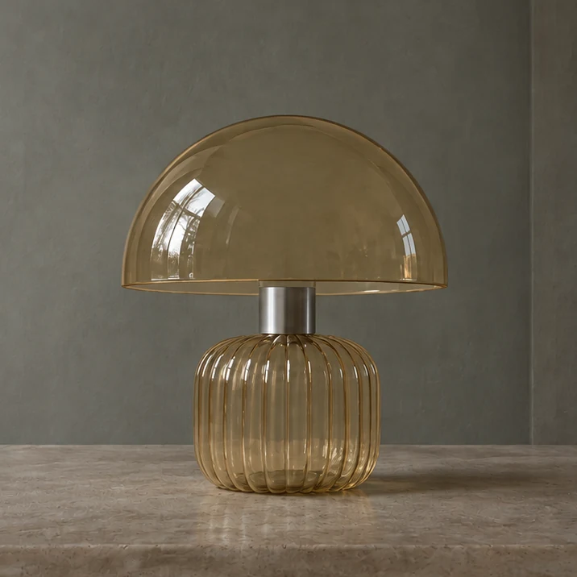
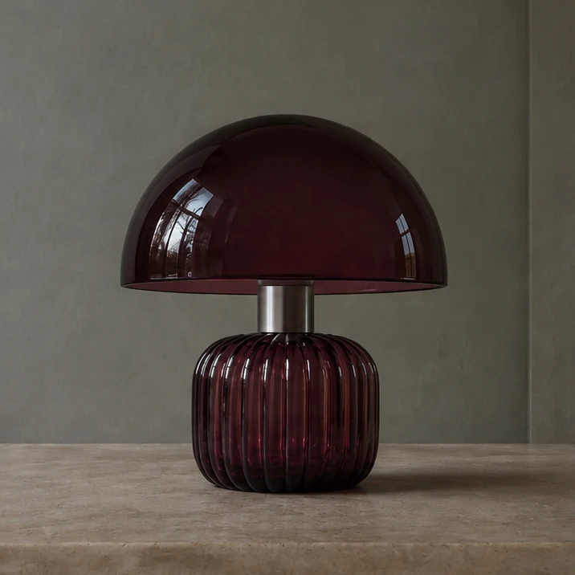
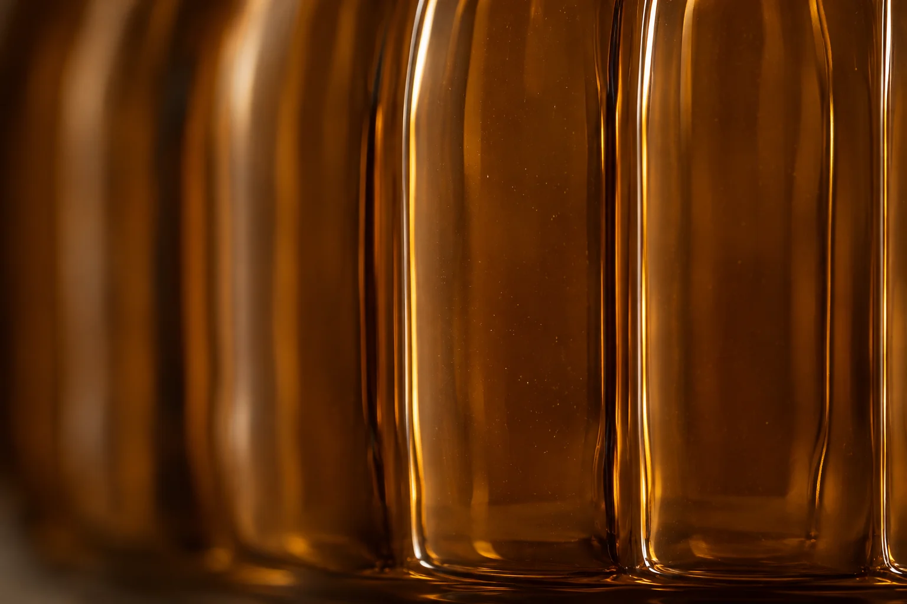
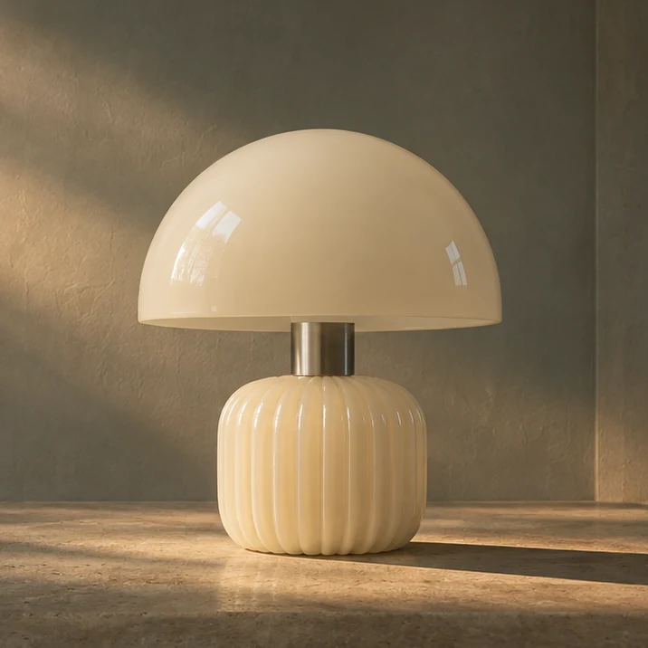
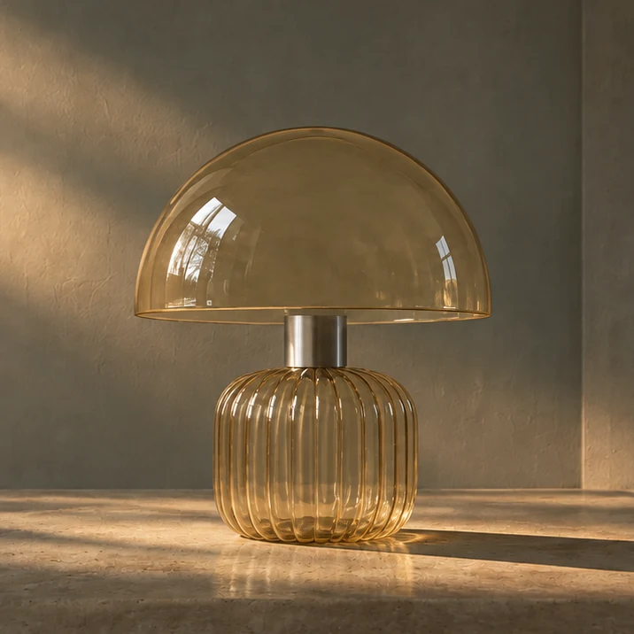
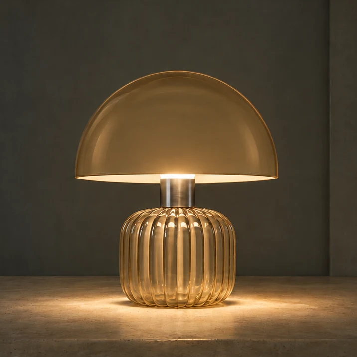
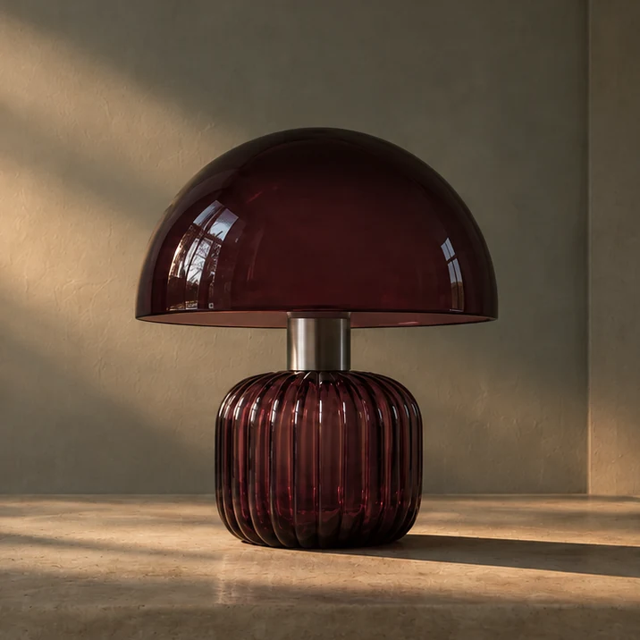
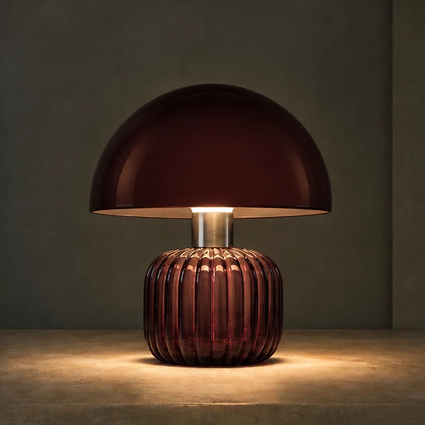

BR-02
Explore Ivory
Opal glass. A pale shade softens the boundary between the dome and a light wall.
A smooth dome rests above a fluted glass foot. See how the finish reads as the light in the room changes.
A window reflection marks the left curve of the opal dome. The stone underneath stays cool gray.
The three finishes
Read the three finishes in the same room light.
Opal glass. A pale shade softens the boundary between the dome and a light wall.

Tea-colored glass. Overlapping layers deepen the honey color around the rim.

Wine-colored glass. Its dark silhouette gives the highlights along the curve a sharp edge.
Object details
A narrow collar lifts the smooth dome clear of the foot. The gap leaves room to see where one surface ends and the next begins.

Follow one finish from daylight to evening, or open any photograph at its full size.





